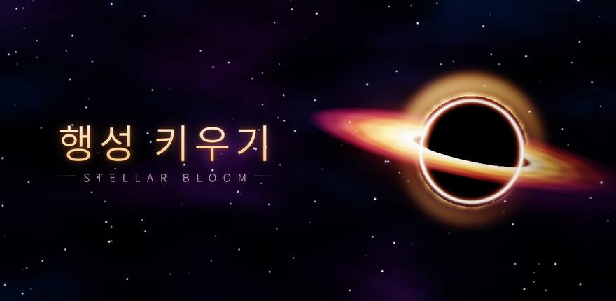

행성 키우기
Stellar Bloom

성운 속 작은 먼지 한 톨. 주변의 먼지와 조각을 끌어모아 행성이 되고, 별이 되고, 블랙홀과 은하가 되어 보세요.


특징
- 24가지 천체로 진화원시 행성, 슈퍼지구, 갈색왜성, 적색 초거성, 마그네타, 초대질량 블랙홀, 타원은하까지. 단계마다 Lv.1~5로 자라요.
- 다가오는 포식자, 그리고 역전판이 끝날 무렵 우주 깊은 곳에서 무언가 다가와요. 도착하기 전에 그보다 커지면 오히려 삼켜 버리고, 더 큰 것이 오는 연장전이 이어져요. 삼키는 순간 질량이 15% 더 늘어나요.
- 내일 떨어지는 혜성첫날 탐사를 마치면 내일 떨어질 혜성이 예고돼요. 다음 날 다시 오면 혜성이 부딪히며 단숨에 다음 형태로 진화해요.
- 사건의 지평선 너머, PHASE 2처음 블랙홀이 되는 순간 화면이 찢어지고 PHASE 2가 열려요. 관측자의 목소리와 관측 일지 12편이 숨겨진 이야기를 들려줘요.
- 삼킨 물질이 운명을 정해요얼음, 가스, 중원소 중 무엇을 많이 삼켰는지에 따라 진화의 갈래가 달라져요.
- 살아 움직이는 중력떠다니는 천체들도 서로 끌어당기고, 부딪히면 큰 쪽이 작은 쪽을 삼켜요.
- 진짜 천문학 이야기새로운 천체를 발견할 때마다 실제 과학에 바탕을 둔 짧은 설명이 도감에 기록돼요.
Android 비공개 테스트 참여하기 Google Play
행성 키우기 비공개 테스트가 Google Play에서 진행 중이에요. 아래 순서대로 누구나 참여할 수 있어요.
- 테스터 그룹 가입Play 스토어에서 쓰는 Google 계정으로 로그인한 뒤, Google 그룹 Starlit Camp Testers에서 그룹 가입을 눌러 주세요.
- 테스트 참여 신청테스트 참여 링크를 열고 테스터 되기를 눌러 주세요. 그룹에 가입한 직후에는 반영까지 몇 분 걸릴 수 있어요.
- Google Play에서 설치참여 신청이 끝나면 Google Play 스토어 페이지에서 게임을 설치하세요. 휴대폰의 Play 스토어 앱에서 검색해도 돼요.
- 14일간 유지하고 의견 보내기정식 출시를 위해 테스터분들이 14일 이상 앱을 설치한 상태로 유지해 주셔야 해요. 가끔 플레이하면서 버그나 아이디어를 메일이나 Play 스토어의 비공개 의견으로 보내 주시면 큰 도움이 돼요.
※ Google Play 비공개 테스트라 Android 기기에서만 참여할 수 있어요. 그룹 가입, 테스트 참여 신청, 설치에는 모두 같은 Google 계정을 써 주세요. 테스트 중에는 게임 내용과 밸런스가 바뀔 수 있어요.
Android 비공개 테스터 모집 Google Play
행성 키우기 출시 전 비공개 테스트를 준비하고 있어요. 테스터 그룹에 미리 가입해 두시면 테스트가 열리는 대로 바로 참여할 수 있어요.
- 테스터 그룹 가입Play 스토어에서 쓰는 Google 계정으로 로그인한 뒤, Google 그룹 Starlit Camp Testers에서 그룹 가입을 눌러 주세요.
- 테스트 오픈 안내 받기테스트가 열리면 이 페이지에 참여 링크와 설치 방법이 올라오고, 그룹 공지로도 알려 드려요.
- 14일간 유지하고 의견 보내기테스트가 열리면 설치 후 14일 이상 유지하면서 플레이하고 의견을 들려주세요.
※ Google Play 테스트라 Android 기기가 필요해요. Play 스토어에서 쓰는 Google 계정으로 가입해 주세요.
Android에서 플레이하기 Google Play
행성 키우기, 지금 Google Play에서 무료로 받아 보세요.
비공개 테스트에 참여해 주신 모든 분께 감사드립니다.
Android 출시 준비 중 Google Play
행성 키우기 출시를 준비하고 있어요. 소식은 이 페이지에서 알려 드릴게요.
iPhone·iPad 버전 App Store
행성 키우기 iPhone·iPad 버전도 Android와 함께 출시를 준비하고 있어요. 출시되면 이 페이지에 App Store 버튼이 생겨요.
※ Google 또는 Apple 계정을 연결하면 Android와 iPhone·iPad에서 같은 진행을 이어 할 수 있어요. 구매는 플랫폼마다 따로 적용돼요.
iPhone·iPad 테스트 참여하기 TestFlight
행성 키우기 iPhone·iPad 버전을 Apple TestFlight로 먼저 플레이할 수 있어요.
- TestFlight 앱 설치iPhone이나 iPad의 App Store에서 Apple의 TestFlight 앱을 설치하세요.
- 테스트 참여같은 기기에서 공개 링크를 열고 수락, 설치를 차례로 눌러 주세요.
- 의견 보내기TestFlight 앱에서 스크린샷과 함께 피드백을 보내거나 메일로 알려 주세요.
※ Google 또는 Apple 계정을 연결하면 Android와 iPhone·iPad에서 같은 진행을 이어 할 수 있어요. 구매는 플랫폼마다 따로 적용돼요.
iPhone·iPad에서 플레이하기
행성 키우기, 지금 App Store에서 무료로 받아 보세요.
※ Google 또는 Apple 계정을 연결하면 Android와 iPhone·iPad에서 같은 진행을 이어 할 수 있어요. 구매는 플랫폼마다 따로 적용돼요.
PC 버전 개발 중 Steam
행성 키우기, PC(Steam) 출시를 목표로 개발하고 있어요. Steam 스토어 페이지가 열리면 이곳에서 바로 찜할 수 있게 알려 드릴게요.
지원
※ 게임의 진화 순서는 실제 천체의 형성 과정을 게임에 맞게 단순화한 것입니다. 무료 게임이며 광고와 인앱 구매가 포함되어 있습니다(지금 iOS 버전은 인앱 구매 없이 광고만).